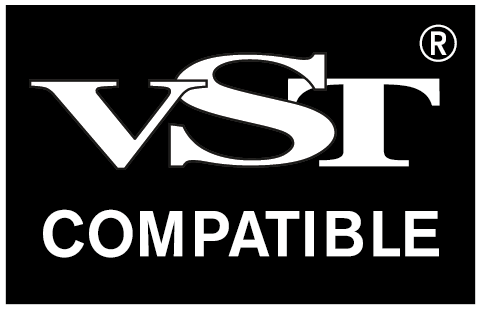
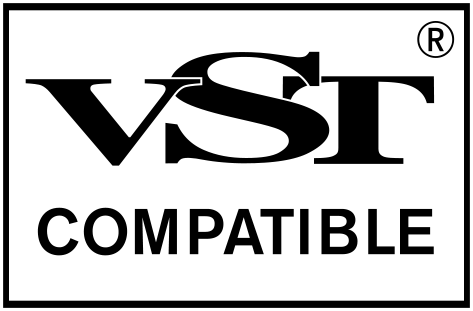

Steinberg VST usage guidelines
On this page:
- 1. Use of VST Compatible Logo
- 2. Use of "VST" Without the VST Compatible Logo
- 3. Claiming of compatibility
- 4. Use on websites
- 5. Use on Packaging
- 6. Use in Product Names or Logos
- 7. Use in Company Names
- 8. Use in social media
- 9. Use in Domain Names
- 10. Use in Logos
- 11. Use in video
- 12. Use in Categories or URLs
- 13. Combinations or Variants
- 14. Official VST Compatible Logos
- 15. Trademark Attribution Requirements
- 16. Questions and Contact
Related pages:
Trademark usage (e.g. "VST" name or logo) is optional under MIT license, but if used, must comply with Steinberg's official trademark rules.
Included in the VST SDK, the VST compatible Logo can be found in the folder VST_SDK/VST3_SDK/vst3_doc/artwork.
1. Use of VST Compatible Logo
If you choose to display the VST Compatible Logo or refer to the VST trademark, you are required to include a reference to Steinberg by using the “VST Compatible logo” as provided by Steinberg on each of the following:
a) Packaging:
The VST Compatible Logo must appear clearly on all physical product packaging.
b) Websites:
The VST Compatible Logo must be visible on every web page referencing or promoting a product using or created with the VST SDK. Displaying the VST Compatible Logo only in a site-wide footer or imprint is not sufficient.
c) Documentation & Manuals (including but not limited to PDF manuals, printed manuals, data sheets, online help):
The VST Compatible Logo must be included in all forms of product documentation. If space constraints prohibit inclusion, a copyright attribution referencing Steinberg must be clearly included.
d) Marketing / Advertising Materials:
The VST Compatible Logo must be shown in all promotional and advertising content unless spatial limitations apply, in which case the attribution must be provided.
e) Product UI (“About Box” or equivalent):
The VST Compatible Logo should appear in the About Box or equivalent UI element (e.g., help menu or splash screen). If space is insufficient, the attribution notice must be used.
f) Legal / Imprint Pages:
The logo or trademark notice must appear on relevant imprint or legal pages referencing VST.
Exception:
If spatial limitations exist (e.g., banners, promotional gadgets), the text-only reference to "VST" along with the copyright notice may be used.
2. Use of "VST" Without the VST Compatible Logo
Parties using the VST SDK in accordance with its license are permitted to use the term “VST” in standard font to denote compatibility, subject to full compliance with these guidelines. This use is allowed:
- On product packaging
- On websites
- In product names
In all cases, the VST Compatible Logo must appear in relevant context, adjacent to or associated with the use of the term “VST”.
3. Claiming of compatibility
Statements such as “Compatible with 64-bit VST” are permitted under the following conditions:
- The product is in fact compatible and was developed using the VST SDK.
- The VST Compatible Logo is shown near the claim, on the same page or surface.
4. Use on websites
The VST Compatible Logo must appear on every webpage referencing a product that uses or was created with the SDK or that displays the term "VST". Placement in the imprint or a single page is not sufficient.
5. Use on Packaging
The VST Compatible Logo must be printed on the packaging of any product that uses or was created using the VST SDK.
6. Use in Product Names or Logos
You may refer to VST compatibility in a product name if:
- “VST” is used in plain text, e.g., “MyCoolEngine for VST”.
- The VST Compatible Logo is shown in immediate visual proximity.
- “VST” is not graphically stylized, embedded into the VST Compatible Logo, or merged into the core product brand.
| Allowed | Not allowed |
|---|---|
7. Use in Company Names
Use of the term “VST” in a company name is strictly prohibited.
8. Use in social media
“VST” may be included in social media handles, channel names, or URLs if:
- The reference denotes compatibility (e.g., “MyCoolEngineForVST”).
- The VST Compatible Logo is shown clearly and consistently on the channel/page.
9. Use in Domain Names
Use of “VST” in domain names (e.g., MyCoolEngineForVST.com) is permitted if:
- The name includes a reference to compatibility (not a standalone brand).
- All web pages under the domain:
- Use the SDK.
- Display the VST Compatible Logo.
10. Use in Logos
- Including “VST” in company logos is not allowed.
- Use in product logos is allowed only in compliance with Section 6.
11. Use in video
“VST” may appear in:
- Video titles (e.g., tutorials or demonstrations)
- On-screen references
Only if the VST Compatible Logo is:
- Displayed in the video itself
- Displayed on the webpage where the video is hosted or previewed
If a still frame from the video includes the term “VST”, the VST Compatible Logo must also be present in the frame or immediately adjacent context.
12. Use in Categories or URLs
Use of “VST” in URLs or category names (e.g., www.myreviews.com/VSTplugins/) is allowed if:
- The category is descriptive and generic.
- Only products that use or are created using the VST SDK are listed.
13. Combinations or Variants
It is not permitted to create modified terms or compositions such as “VSTi” or other abbreviations, blends, or derivatives.
14. Official VST Compatible Logos
Steinberg provides the following VST Compatible Logos:
Minimum printing size = 20 x 18,7 mm


Minimum printing size = 15 x 10 mm
These dimensions must be respected in all digital and printed uses.
15. Trademark Attribution Requirements
The first use of “VST” in any product-related material must include the ® symbol. Additionally, the following attribution must appear in all product credits and documentation:
"VST is a registered trademark of Steinberg Media Technologies GmbH."
16. Questions and Contact
For further clarification or to submit suggestions, please contact:
reception@steinberg.de